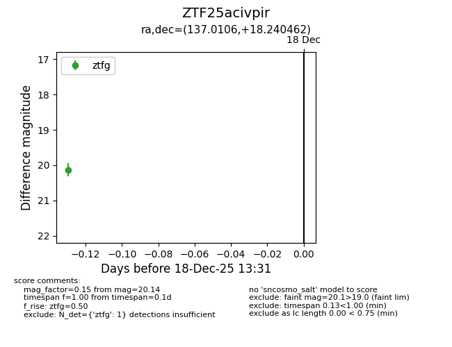
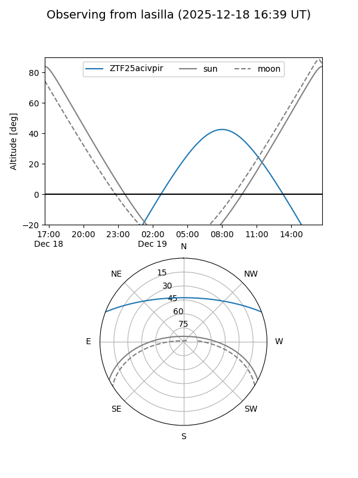
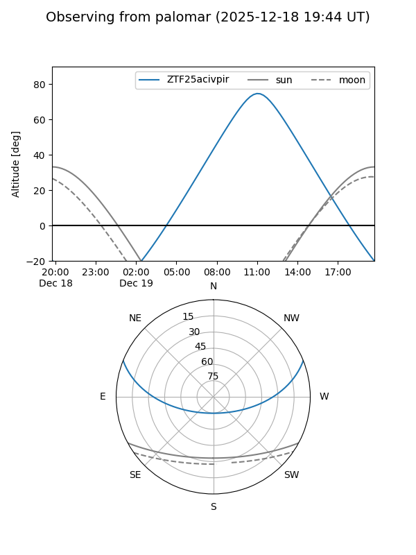

ZTF25acivpir
Target ZTF25acivpir at 2025-12-18 13:32
Aliases and brokers:
FINK: fink-portal.org/ZTF25acivpir
Lasair: lasair-ztf.lsst.ac.uk/objects/ZTF25acivpir
ALeRCE: alerce.online/object/ZTF25acivpir
alt names
ZTF25acivpir (ztf,fink_ztf)
Coordinates:
equatorial (ra, dec) = 137.0106,+18.24046
equatorial (HMS+DMS) = 09:08:02.54,+18:14:25.66
galactic (l, b) = (210.3491,+38.11481)
Photometry
last ztfg=20.14
1 ztfg detections
Lightcurve

Visibility


Additional plots